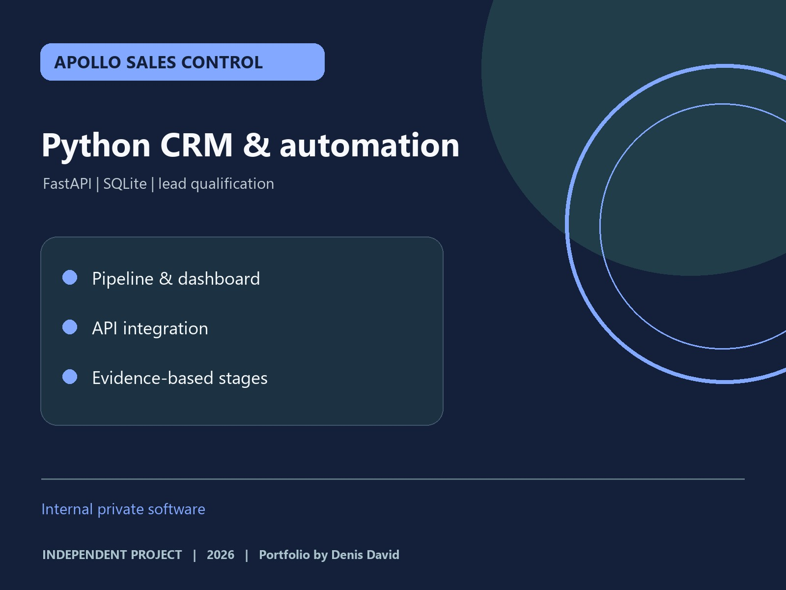

Arquitectura Multiagente · B2B
Apollo: Pipeline de Agentes para Investigación y Cualificación Comercial
Sistema integral que automatiza la prospección, análisis de empresas y estructuración de propuestas B2B. Resuelve el problema de las alucinaciones comerciales mediante una arquitectura de validación cruzada en dos fases: los agentes analizan registros y webs públicas, estructuran métricas con esquemas Pydantic y encolan las oportunidades en un Command Center con supervisión humana obligatoria antes de cualquier contacto.
Python 3.12+
FastAPI
SQLite (WAL)
Pydantic v2
Asynchronous Workers
HITL Review Queue